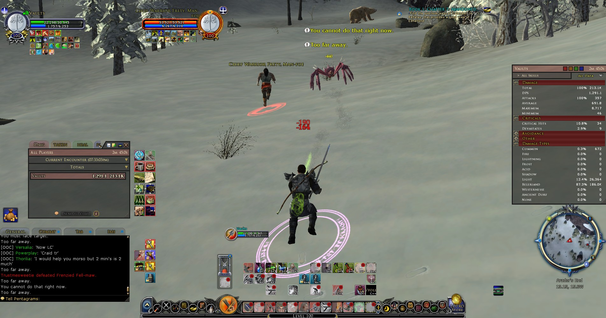

Lieutenant Vaults, Original Challenger of Gothmog and the sucessor of Shock and Awe; Guardian class of the Free Peoples (Freeps). Vaults was the name of my Guardian and one of my most prized identities in LOTRO. As a Guardian class it was my primary role to act as the main tank when in group situations. As successor I held second in command under Captain-General Yelk in leading the kinship Shock and Awe (these were my people). In my 10 years of LOTRO Vaults had over a year's played time alone. This amount of time spent on one character came with a proficiency in Crafting (Tinker), a complete set of Virtues, maxed out Stat Enhancements, all available Class Trait Points and Trait Trees, top tier Legendaries, and a full set of the best end game raiding gear one could get at any given time for that level cap (including swap gear to take on multiple roles and complete different types of challenges throughout the game). As a Lieutenant it meant that I had successfully reached rank 10 in PvMP. Over time I gained an extensive knowledge of the game's classes, skills, mechanics, and instances through personal experience, research, and thorough testing; All of which allowed me to support, teach, and lead others from a well-built tanking machine. This is Vaults.
Often times while playing Guardian I liked to solo group content. Not only did this present a challenge while bored but it also allowed for a good testing environment when coming up with solid builds for gear and stats. When adding points to a characters trait tree there are many combinations one can take to create a tree build. Some are just not worth the points and should be avoided. Running through content like this helped me to weed out which trait lines were good and which were bad.
Tanking small group content with no healer! With enough DPS and the right gear, a well-built tank was capable of staying alive without the outside help of a group healer. The Guardian class could properly time its skills to both hold agro and self-heal until all npcs were cleared. If played correctly, they even had some solid AOE damage output despite being a tank. This type of risky play style was a fun way to build ones survival skills and worked as a great team building exercise due to the amount of coordination required between group members.
The main purpose of a 6-man instance was to grind out the gear that would be necessary in completing the next new raid once it was released. 6-man instances also sometimes dropped super rare items that could go toward improving ones character. When we got bored, we would come up with all sorts of kin challenges. In Shock and Awe, once we learned the mechanics of an instance, we tested the limits of our groups skills by attempting to complete an entire instance as quickly as possible. Sometimes this included replacing a healing class with DPS or even a tank with an off-tanking DPS class. Speed and efficiency were the name of the game when grinding for these rare goodies.
"A new title has been bestowed upon you, you may now be known as..." Raiding was a huge part of my role as a tank in Shock and Awe. As a raiding kinship, we were an elite team of no more than 15-20 players (Some of the best I've ever seen). PvE Raids were completed in groups of 12 only. Everyone had a role to fill with each person being heavily relied upon by the rest of the group. Being such a small close group, we knew each other's strengths and weaknesses well. I first joined Shock and Awe during the Rise of Isenguard expansion taking on role of burglar (Karble, Original Challenger of Saruman: Brandywine Server), however over time people left the game and new roles open up that need to be filled. As Vaults I took on this new role replacing Bellrock as the kin's main tank in order to complete the latest raid at level 105 cap titled "Throne of the Dread Terror." Originally a Brandywine server kinship, Shock and Awe had transferred to Gladden to participate in this new raid. Being a much larger server than Brandywine at the time, we had greater competition in being the first to complete the entire raid. Gladden had become a melting pot of dying server kinships. "Ramble On of Elendilmir" previously just "Ramble On" had also transferred to Gladden and proved to be top contenders in fighting for this achievement.
In preparation for competing in the Throne of the Dread Terror raid, Shock and Awe copied its ranks to the beta server Bulloarer and began practicing in secret. This server allows any VIP member to copy its characters from the live servers or roll a new one and fully gear each out for free in order to test out upcoming content. We did just that under the secret kinship name "Shadowy Billionaires" and took on new names as well for each of our characters. With this plan in action, and a tight lid on our raiding progress on live, our competitors made the false assumption that we were neither practicing prior to release or even competing in the raid once it launched. This gave us an edge as they casually worked toward their own completion and we raced through the raid completing one boss after another on Tier 2 Challenge (T2C) mode.
Completing a raid in LOTRO for the first time is like deconstructing a complex puzzle. Which classes needed to be present? How fast did a fight need to be completed? Did the fight allow for player deaths or would challenge mode be lost? What were the mechanics involved? Some of us might spend up to 5 hours in one day learning a single boss fight out of the 5+ total in the raid instance. As an Officer and Successor to the kinship, this was part of the role I took on. I would write up guides for the rest of the kinship to get up to speed and I had a blast doing it! Others would record fights and watch the footage for clues. After some months had passed of being stuck on Boss 4, the most difficult of the 6 bosses, we had made it to the final boss in one run of the instance only to have a bittersweet ending when a door bugged closed preventing us from completing the raid. One week later, On August 26, 2016 Shock and Awe became the first kinship on Gladden to complete T2C Mode of the Throne of the Dread terror raid in a single instance attempt. This feat bestowed upon us the server exclusive title of "Original" Challenger of Gothmog. A repeat win for Original Challenger titles after having completed the server first Tower of Orthanc raid at level 75 cap on Brandywine. This achievement was also the first and only win for a North American based kinship at that time. With the competition out of the way, our enemies in the kinship Ramble On of Elendilmir became allies as we helped them progress through the raid allowing them to complete the entire instance themselves in late October of that year. We also transferred the kinship to Arkenstone soon after and began to help out there as well participate in more active PvMP.
Shock and Awe | Throne of the Dead Terror Video Playlist (1-14)
Shock and Awe | Throne of the Dead Terror Video Playlist (1-14)
Over time once a raid had been completed and we had it on "farm mode" (in which case we would run it over and over again on alternate characters taking on new roles) our gear became better and we started completing each fight in record time. Fights that required two tanks now called for one solid tank. We could add more DPS or another healer and things became less chaotic. By playing in someone else's shoes as a new role, you could find ways to improve your original role and make the fight that much easier. Eventually we would have each fight down to a science with full confidence in our ability to win.
When I wasn't raiding or grinding toward some sort of gear or stat improvement, I was in the Ettenmoors; The PvMP zone of LOTRO. Whether it was solo, small kin groups or in a raid, I was in the moors chasing down as many creeps as I could find for glory and renown.
Sometimes I'd roam the moors solo; looking for a single creep or small group to fight.
Getting a 1 vs 1+ fight was always fun as long as you were not too out matched. Being able to survive and win against multiple enemies at once improved your ability to play your class and came in handy once you were back in PvE.
"Привет пупсик."
Other times a 1v1 circle would form somewhere on the map and individuals from both sides would gather to compete against one another in solo combat. This was an honors system so if it was not an agreed upon fight, you wouldn't attack the enemies that made up the circle. In past generations of LOTRO a 1v1 fight was initiated with a ./bow emote but later evolved to simply jumping up and down in front of whomever you wished to fight. If they jumped as well, the fight was on! My personal favorite unspoken rule of 1v1s was so hold back while fighting and use as few skills as possible. If you could defeat your opponents in this manner, it was a good fight and you were considered to be the best of your class. Especially if your class was not a "flavor of the month" class that had recently been buffed in an update to the game. It was all about the challenge that came with holding back.
Often the whole kinship would want to get in on the action. Our leader would form a 6-man or expand to a half or full raiding group if the opposition had superior numbers. We might even combine our group with a pre-existing one of join someone else's raid. The best moments were when our coordinated groups could take on double our numbers in creeps or more and still come out on top. In the PvMP zone you were likely to find roving groups of organized creeps all over the place varying in size from solos to 24-man raids or more. The same was true for the allied freep groups as well. It was not uncommon to have player not in your group follow you as well. We called these types "gold taggers" and they made for good group support or even cannon fodder if the situation called for it.
An unspoken rule in LOTRO PvMP was that "farming" or "fight clubbing" was forbidden (and downright shameful). This is when a single player would have multiple accounts open at once with the sole purpose of playing both sides in PvMP (both freep and creep) in order to continuously kill one of the account's characters for point gains. This action was also known as "rank farming". Toward the end of my time in LOTRO this became quite common to see. People went as far as multi-boxing many accounts at once with botting capabilities in order to farm ranks even while they were away from keyboard (AFK). Some would get quite clever with how they cheated. I would often team up with the enemy creeps in order to put a stop to this type of behavior. I would get a kill from it, and so would they, so it was in our best interest to work together. Reaching rank 15 was an impressive feat in LOTRO, however if you did it in such a manner as this, you were considered the lowest of the low to those who knew about it. The same went for those that tried to exploit the game in order to compete for raid titles or get the best gear!
While farming a second account to gain rank was dishonorable, having multiple accounts open at once was not above those of us in Shock and Awe; even if it was while playing in PvMP. It was a beneficial strategy to have a spy that could read the other side's chat in order to gauge where people were and tell if you'd been called out for the masses to find. Sometimes we would even call ourselves out in order to get a quick fight in. As long as we didn't kill that other account for point gain, it was fair game. After all, this was war and there were no rules. It made for some funny quotes as well when someone was talking about you in the open chat. Some claims were quite impressive to say the least. Not everyone agreed with this tactic and some tried to hide it, but it was widely used as a means of communication and intel gathering by many.
In December of 2018 I retired from the game of LOTRO at level 115 weeks before the new raid was to be released. Our leader was M.I.A. and Shock and Awe's numbers had dwindled in the midst of a pre-update lull. We would not have enough numbers to compete this time around. The game was changing and excitement started to fade after 10 good years. What was left of the kinship followed suit and those that remained after that either freelanced their talents to other kinships or joined new ones entirely. I left with many good memories and life long friends. It was a time to remember.